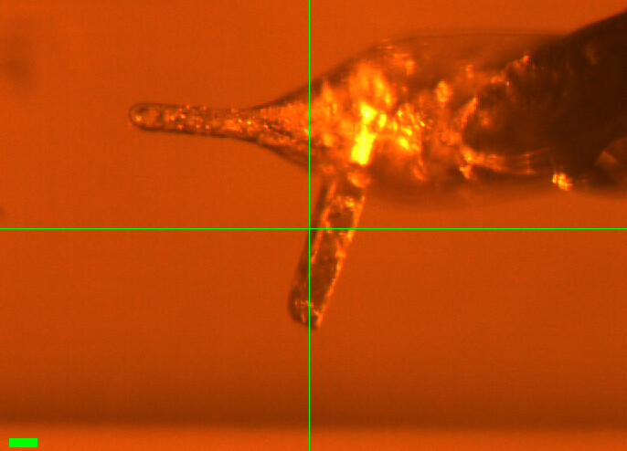
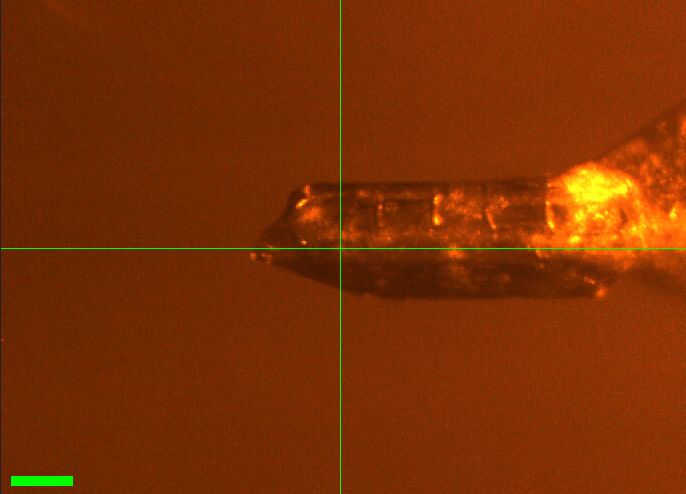
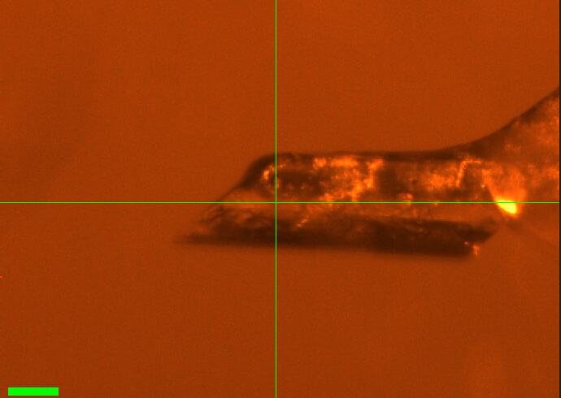
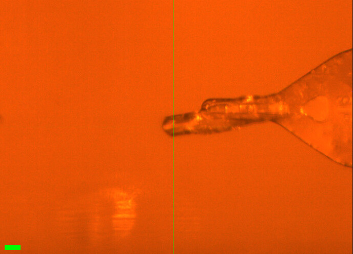
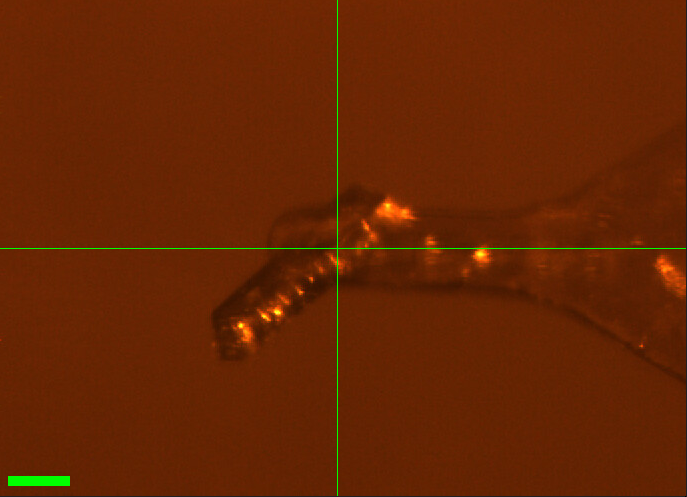
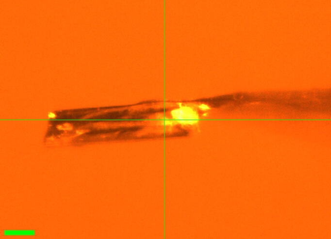

2026-10-14 @ CHESS 7b2
Under Construction
This page was auto-transcribed from handwritten notebooks and log files. We are currently reviewing for correctness and adding missing information (see TODO comments in markdown source). Use with caution.
Second CHESS beam time of the 2026-3 run cycle.
Goals
- Temperature-dependent data on DHFR crystals (vector scans, 180˚ per temperature step, 280–320 K)
Participants
Steve M and Neti B from Ando lab; support from Mike P, John I, and Tricia C at CHESS.
Data
Root directory at CHESS: /nfs/chess/raw/2026-3/id7b2/meisburger/20261014
Root directory on OSN: s3://diffuse-chess-public/20261014
Beamline setup
Failed to control temperature
During beamtime, we struggled with the cryostream controller, and ultimately ended the beamtime early when it became unusable. When troubleshooting during setup, the cold stream head was swapped out. Unfortunately, we neglected to align it to the goniometer before starting data collection and didn't notice this until after data collection ended. Based on the misaligned position, the capillary was (mostly? partly?) bathed in sheath flow, which is at room temperature. Thus, the temperature values recorded below are the setpoint of the controller, but not the crystal temperature (which is likely close to room temp. for all datasets). The ambient T datasets are usable, but all the others are suspect. We plan to repeat these experiments in two weeks.
| parameter | value | notes |
|---|---|---|
| X-ray energy | 14 keV @ 0.01% bandwidth | Si 111 channel cut mono inserted |
| Beam size | 100 µm x 100 µm | Slit-defined, no CRL. Not changed during the beamtime. |
| Flux | 6.5 x 1010 ph/s | I2 ~72,900 / s, ICol ~270,700 / s; see SPEC ct output below |
| Background reduction | On-axis mirror with Mo tube | |
| Centering camera | on-axis camera | New long working distance camera (as on 2026-09-30). Scalebar in screenshots: green bar, lower left. |
| Beamstop | Semi-transparent Mo beamstop | |
| Data collection software | "MX Collect" (python) & SPEC | Modified by Mike P to use the new camera |
| Temperature control | Oxford cryostream, end-on |
Steve M and Neti B arrived at ~9–10 AM. The DHFR crystals had been looped the day before by Neti; Steve transported them to CHESS on the evening of 10/13, and they were stored in the cold room overnight. Mike P, John I, and Tricia C aligned the station.
Steve adjusted the mirror and the s3h calibration, and recovered a lot of flux (up ~1.6x from 3.9 x 1010 ph/s on 2026-09-30):
From id7b2.classe.cornell.edu
Wed Oct 14 15:21:43 2026
Output of macro ct
Wed Oct 14 15:21:44 2026
Seconds = 1
Diode = 36 (36/s)
I2 = 72925 (72925/s)
ICol = 270685 (270685/s)
Gate = 0 (0/s)
QuadX = 0 (0/s)
QuadY = 0.000132 (0.000132/s)
newI1 = 152599 (152599/s)
newI0 = 234765 (234765/s)
Samples
| Name | Sample | Well composition | Drop composition | Notes |
|---|---|---|---|---|
| DHFR-Folate-NADP | E. coli dihydrofolate reductase with folate and NADP+ | Looped by Neti B on 10/13 and stored in the cold room at CHESS overnight. |
Data collection
Collected a 1 s exposure with nothing in the beam to document the background scatter. Slits 100 x 100 µm.
Subdirectory: setup
| prefix | φ0 (deg.) | ∆φ (deg.) | images | ∆t (s) | tf (%) | d (mm) | E (keV) |
|---|---|---|---|---|---|---|---|
| air_1751 | 0 | 0.1 | 1 | 1 | 100 | 185 | 14 |
| air_1752 | 0 | 0.1 | 1 | 1 | 100 | 185 | 14 |
1. DHFR-Folate-NADP (dose test)
Starting the DHFR samples with crystal #25 (the plan was to go in reverse order). No screenshot was recorded.
Regular (not vector) scans, 360˚. Slits 100 x 100 µm. Temperature 300 K (per xia2 metadata).
Subdirectory: DHFR/DHFR_25
| prefix | φ0 (deg.) | φ1 (deg.) | ∆φ (deg.) | images | ∆t (s) | tf (%) | d (mm) | E (keV) |
|---|---|---|---|---|---|---|---|---|
| DHFR_25_300K_1753* | 0 | 360 | 0.1 | 3600 | 0.01 | 100 | 185 | 14 |
| DHFR_25_300K_1754 | 0 | 360 | 0.1 | 3600 | 0.01 | 100 | 185 | 14 |
first scan at the tip of the crystal
* DHFR_25_300K_1753 was collected at the tip of the crystal. The crystal was then moved to a new spot for DHFR_25_300K_1754. Only 1754 was processed.
no background
No background scan was collected for this crystal.
B-factor decayed by ~4 Å2 over the 36 s data collection. So the lifetime (without vector, at 100% transmission) is approximately 18 s. Our strategy will be to collect 180˚ from each crystal and vector over a ~500 µm distance if possible, maintaining 100% transmission.
xia2 processing
| DHFR_25_300K_1754 | |
|---|---|
| scan | 1754 |
| Mosaic spread | 0.105 |
| Resolution | 1.22 |
| Unit Cell | [34.42, 45.71, 99.09, 90.0, 90.0, 90.0] |
| Image range | [1, 3600] |
| Completeness | 100.0 |
| Multiplicity | 12.6 |
| I/sigma | 10.0 |
| Rpim | 0.026 |
| Wilson B factor | 14.44 |
| Space group | P 21 21 21 |
| temperature | 300 |
2. DHFR-Folate-NADP (multi-T)
Crystal #4. No screenshot was recorded.
Vector scan (spinx translation: 419.2 µm). Slits 100 x 100 µm.
Plan: 295, 310, 295, 280, 295 K temperature series, with 5 minute wait time after each temperature change. (A 320 K step and a final 295 K step were added at the end.)
Subdirectory: DHFR/DHFR_4
| prefix | φ0 (deg.) | φ1 (deg.) | ∆φ (deg.) | images | ∆t (s) | tf (%) | d (mm) | E (keV) |
|---|---|---|---|---|---|---|---|---|
| DHFR_4_295K_1755 | 0 | 180 | 0.1 | 1800 | 0.01 | 100 | 185 | 14 |
| DHFR_4_295K_bg_1756 | 0 | 180 | 1 | 180 | 0.1 | 100 | 185 | 14 |
Ramped to 310 K and waited 5 min.
| prefix | φ0 (deg.) | φ1 (deg.) | ∆φ (deg.) | images | ∆t (s) | tf (%) | d (mm) | E (keV) |
|---|---|---|---|---|---|---|---|---|
| DHFR_4_310K_1757 | 0 | 180 | 0.1 | 1800 | 0.01 | 100 | 185 | 14 |
| DHFR_4_310K_bg_1758 | 0 | 180 | 1 | 180 | 0.1 | 100 | 185 | 14 |
Changed temperature to 295 K, waited 5 min.
| prefix | φ0 (deg.) | φ1 (deg.) | ∆φ (deg.) | images | ∆t (s) | tf (%) | d (mm) | E (keV) |
|---|---|---|---|---|---|---|---|---|
| DHFR_4_295K_1759 | 0 | 180 | 0.1 | 1800 | 0.01 | 100 | 185 | 14 |
| DHFR_4_295K_bg_1760 | 0 | 180 | 1 | 180 | 0.1 | 100 | 185 | 14 |
Changed temperature to 280 K, waited 5 min.
| prefix | φ0 (deg.) | φ1 (deg.) | ∆φ (deg.) | images | ∆t (s) | tf (%) | d (mm) | E (keV) |
|---|---|---|---|---|---|---|---|---|
| DHFR_4_280K_1761 | 0 | 180 | 0.1 | 1800 | 0.01 | 100 | 185 | 14 |
| DHFR_4_280K_bg_1762 | 0 | 180 | 1 | 180 | 0.1 | 100 | 185 | 14 |
Changed temperature to 295 K, waited 5 min.
| prefix | φ0 (deg.) | φ1 (deg.) | ∆φ (deg.) | images | ∆t (s) | tf (%) | d (mm) | E (keV) |
|---|---|---|---|---|---|---|---|---|
| DHFR_4_295K_1763 | 0 | 180 | 0.1 | 1800 | 0.01 | 100 | 185 | 14 |
| DHFR_4_295K_bg_1764 | 0 | 180 | 1 | 180 | 0.1 | 100 | 185 | 14 |
Changed temperature to 320 K, waited 5 min.
| prefix | φ0 (deg.) | φ1 (deg.) | ∆φ (deg.) | images | ∆t (s) | tf (%) | d (mm) | E (keV) |
|---|---|---|---|---|---|---|---|---|
| DHFR_4_320K_1765 | 0 | 180 | 0.1 | 1800 | 0.01 | 100 | 185 | 14 |
| DHFR_4_320K_bg_1766 | 0 | 180 | 1 | 180 | 0.1 | 100 | 185 | 14 |
Changed temperature to 295 K.
| prefix | φ0 (deg.) | φ1 (deg.) | ∆φ (deg.) | images | ∆t (s) | tf (%) | d (mm) | E (keV) |
|---|---|---|---|---|---|---|---|---|
| DHFR_4_295K_1767 | 0 | 180 | 0.1 | 1800 | 0.01 | 100 | 185 | 14 |
| DHFR_4_295K_bg_1768 | 0 | 180 | 1 | 180 | 0.1 | 100 | 185 | 14 |
condensation
Condensation drops were observed on the plastic capillary after the 320 K step. DHFR_4_320K_1765 and DHFR_4_295K_1767 may be affected.
xia2 processing
| DHFR_4_295K_1755 | DHFR_4_310K_1757 | DHFR_4_295K_1759 | DHFR_4_280K_1761 | DHFR_4_295K_1763 | DHFR_4_320K_1765 | |
|---|---|---|---|---|---|---|
| scan | 1755 | 1757 | 1759 | 1761 | 1763 | 1765 |
| Mosaic spread | 0.022 | 0.022 | 0.021 | 0.024 | 0.023 | 0.024 |
| Resolution | 1.16 | 1.16 | 1.19 | 1.21 | 1.22 | 1.21 |
| Unit Cell | [34.45, 45.79, 98.95, 90.0, 90.0, 90.0] | [34.45, 45.79, 98.96, 90.0, 90.0, 90.0] | [34.45, 45.77, 98.99, 90.0, 90.0, 90.0] | [34.42, 45.67, 99.02, 90.0, 90.0, 90.0] | [34.42, 45.69, 99.06, 90.0, 90.0, 90.0] | [34.45, 45.78, 99.02, 90.0, 90.0, 90.0] |
| Image range | [1, 1800] | [1, 1800] | [1, 1800] | [1, 1800] | [1, 1800] | [1, 1800] |
| Completeness | 95.0 | 95.0 | 96.6 | 96.9 | 97.0 | 96.9 |
| Multiplicity | 6.3 | 6.3 | 6.4 | 6.5 | 6.5 | 6.5 |
| I/sigma | 7.7 | 7.6 | 5.7 | 8.2 | 7.8 | 8.5 |
| Rpim | 0.048 | 0.048 | 0.06 | 0.046 | 0.048 | 0.042 |
| Wilson B factor | 13.93 | 14.01 | 13.99 | 14.34 | 14.69 | 14.79 |
| Space group | P 21 21 21 | P 21 21 21 | P 21 21 21 | P 21 21 21 | P 21 21 21 | P 21 21 21 |
| temperature | 295 | 310 | 295 | 280 | 295 | 320 |
3. DHFR-Folate-NADP (multi-T)

Crystal #3. Might be 2 crystals (the screenshot shows a second rod sticking out below the main crystal). Mounted the crystal and waited 5 min. Checked for condensation; none after this.
Vector scan (spinx translation: 172.8 µm). Slits 100 x 100 µm.
Subdirectory: DHFR/DHFR_3
Took a screenshot of the crystal.
| prefix | φ0 (deg.) | φ1 (deg.) | ∆φ (deg.) | images | ∆t (s) | tf (%) | d (mm) | E (keV) |
|---|---|---|---|---|---|---|---|---|
| DHFR_3_295K_1769 | 0 | 180 | 0.1 | 1800 | 0.01 | 100 | 185 | 14 |
| DHFR_3_295K_bg_1770 | 0 | 180 | 1 | 180 | 0.1 | 100 | 185 | 14 |
xia2: unit cell [34.3, 45.4, 99.2, 90, 90, 90], 1.24 Å.
| prefix | φ0 (deg.) | φ1 (deg.) | ∆φ (deg.) | images | ∆t (s) | tf (%) | d (mm) | E (keV) |
|---|---|---|---|---|---|---|---|---|
| DHFR_3_310K_1771 | 0 | 180 | 0.1 | 1800 | 0.01 | 100 | 185 | 14 |
| DHFR_3_310K_bg_1772 | 0 | 180 | 1 | 180 | 0.1 | 100 | 185 | 14 |
poor diffraction at 310 K
The diffraction at 310 K (DHFR_3_310K_1771) looked bad, so we moved on. Only the 295 K scan was processed. The crystal may also contain a second lattice (see screenshot).
xia2 processing
| DHFR_3_295K_1769 | |
|---|---|
| scan | 1769 |
| Mosaic spread | 0.05 |
| Resolution | 1.24 |
| Unit Cell | [34.32, 45.37, 99.24, 90.0, 90.0, 90.0] |
| Image range | [1, 1800] |
| Completeness | 100.0 |
| Multiplicity | 6.4 |
| I/sigma | 12.0 |
| Rpim | 0.034 |
| Wilson B factor | 15.76 |
| Space group | P 21 21 21 |
| temperature | 295 |
4. DHFR-Folate-NADP

Crystal #2. Took a photo (DHFR-2.PNG in the notebook; DHFR_2.png here). The cryostream was coming down from 310 K to 295 K.
Vector scan (spinx translation: 374.3 µm). Slits 100 x 100 µm.
Subdirectory: DHFR/DHFR_2
| prefix | φ0 (deg.) | φ1 (deg.) | ∆φ (deg.) | images | ∆t (s) | tf (%) | d (mm) | E (keV) |
|---|---|---|---|---|---|---|---|---|
| DHFR_2_295K_1773* | 0 | 180 | 0.1 | 1800 | 0.01 | 100 | 185 | 14 |
| DHFR_2_295K_1774 | 0 | 180 | 0.1 | 1800 | 0.01 | 100 | 185 | 14 |
| DHFR_2_295K_bg_1775 | 0 | 180 | 1 | 180 | 0.1 | 100 | 185 | 14 |
repeated scan
* DHFR_2_295K_1773 was repeated as DHFR_2_295K_1774 42 s later (the notebook scan number was corrected from 1773 to 1774). Use 1774.
poor statistics
xia2: mosaicity 0.32˚ and resolution 1.67 Å, much worse than the other DHFR crystals measured today (first 295 K scan: mosaicity 0.02–0.08˚, resolution 1.16–1.24 Å). Rpim 0.094.
A 310 K scan (DHFR_2_310K) was planned but crossed out in the notebook and not collected.
xia2 processing
| DHFR_2_295K_1774 | |
|---|---|
| scan | 1774 |
| Mosaic spread | 0.321 |
| Resolution | 1.67 |
| Unit Cell | [34.27, 45.17, 99.2, 90.0, 90.0, 90.0] |
| Image range | [1, 1800] |
| Completeness | 99.4 |
| Multiplicity | 6.6 |
| I/sigma | 8.2 |
| Rpim | 0.094 |
| Wilson B factor | 18.54 |
| Space group | P 21 21 21 |
| temperature | 295 |
5. DHFR-Folate-NADP

Crystal #1. Took a photo.
Vector scan (spinx translation: 350.4 µm). Slits 100 x 100 µm.
Subdirectory: DHFR/DHFR_1
| prefix | φ0 (deg.) | φ1 (deg.) | ∆φ (deg.) | images | ∆t (s) | tf (%) | d (mm) | E (keV) |
|---|---|---|---|---|---|---|---|---|
| DHFR_1_295K_1776 | 0 | 180 | 0.1 | 1800 | 0.01 | 100 | 185 | 14 |
| DHFR_1_295K_bg_1777 | 0 | 180 | 1 | 180 | 0.1 | 100 | 185 | 14 |
Great crystal. xia2: [34.30, 45.17, 99.25], mosaicity 0.079˚. There is some radiation damage?
Changed temperature to 310 K. No condensation yet. There are a few drops on the capillary, but probably not condensation.
| prefix | φ0 (deg.) | φ1 (deg.) | ∆φ (deg.) | images | ∆t (s) | tf (%) | d (mm) | E (keV) |
|---|---|---|---|---|---|---|---|---|
| DHFR_1_310K_1778 | 0 | 180 | 0.1 | 1800 | 0.01 | 100 | 185 | 14 |
| DHFR_1_310K_bg_1779 | 0 | 180 | 1 | 180 | 0.1 | 100 | 185 | 14 |
very mosaic at 310 K
The diffraction at 310 K looked very mosaic, so we moved on to another crystal. xia2: mosaicity 0.86˚ (vs 0.079˚ at 295 K), resolution 1.76 Å (vs 1.17 Å), Wilson B 26.1 Å2 (vs 14.7 Å2), and the unit cell shrank (a, b = 34.07, 44.73 Å vs 34.28, 45.19 Å).
xia2 processing
| DHFR_1_295K_1776 | DHFR_1_310K_1778 | |
|---|---|---|
| scan | 1776 | 1778 |
| Mosaic spread | 0.079 | 0.863 |
| Resolution | 1.17 | 1.76 |
| Unit Cell | [34.28, 45.19, 99.21, 90.0, 90.0, 90.0] | [34.07, 44.73, 99.02, 90.0, 90.0, 90.0] |
| Image range | [1, 1800] | [1, 1800] |
| Completeness | 95.6 | 98.3 |
| Multiplicity | 6.3 | 6.6 |
| I/sigma | 13.3 | 8.3 |
| Rpim | 0.024 | 0.059 |
| Wilson B factor | 14.71 | 26.13 |
| Space group | P 21 21 21 | P 21 21 21 |
| temperature | 295 | 310 |
6. DHFR-Folate-NADP (multi-T)

Crystal #5. Took a photo: it is a thin crystal.
Vector scan (spinx translation: 443.1 µm). Slits 100 x 100 µm.
Subdirectory: DHFR/DHFR_5
| prefix | φ0 (deg.) | φ1 (deg.) | ∆φ (deg.) | images | ∆t (s) | tf (%) | d (mm) | E (keV) |
|---|---|---|---|---|---|---|---|---|
| DHFR_5_295k_1780 | 0 | 180 | 0.1 | 1800 | 0.01 | 100 | 185 | 14 |
| DHFR_5_295k_bg_1781 | 0 | 180 | 1 | 180 | 0.1 | 100 | 185 | 14 |
xia2: [34.4, 45.6, 99.1], mosaicity 0.02˚.
Cooled to 280 K.
| prefix | φ0 (deg.) | φ1 (deg.) | ∆φ (deg.) | images | ∆t (s) | tf (%) | d (mm) | E (keV) |
|---|---|---|---|---|---|---|---|---|
| DHFR_5_280k_1782 | 0 | 180 | 0.1 | 1800 | 0.01 | 100 | 185 | 14 |
| DHFR_5_280k_bg_1783 | 0 | 180 | 1 | 180 | 0.1 | 100 | 185 | 14 |
Good scattering. xia2: [34.4, 45.5, 99.14].
Heated back to 295 K. No condensation yet.
| prefix | φ0 (deg.) | φ1 (deg.) | ∆φ (deg.) | images | ∆t (s) | tf (%) | d (mm) | E (keV) |
|---|---|---|---|---|---|---|---|---|
| DHFR_5_295K_1784 | 0 | 180 | 0.1 | 1800 | 0.01 | 100 | 185 | 14 |
| DHFR_5_295K_bg_1785 | 0 | 180 | 1 | 180 | 0.1 | 100 | 185 | 14 |
Good scattering. Heated to 310 K. No condensation yet.
| prefix | φ0 (deg.) | φ1 (deg.) | ∆φ (deg.) | images | ∆t (s) | tf (%) | d (mm) | E (keV) |
|---|---|---|---|---|---|---|---|---|
| DHFR_5_310K_1786 | 0 | 180 | 0.1 | 1800 | 0.01 | 100 | 185 | 14 |
| DHFR_5_310K_bg_1787 | 0 | 180 | 1 | 180 | 0.1 | 100 | 185 | 14 |
Good scattering. Going down to 295 K. Condensation seen (not too much, though).
| prefix | φ0 (deg.) | φ1 (deg.) | ∆φ (deg.) | images | ∆t (s) | tf (%) | d (mm) | E (keV) |
|---|---|---|---|---|---|---|---|---|
| DHFR_5_295K_1788 | 0 | 180 | 0.1 | 1800 | 0.01 | 100 | 185 | 14 |
| DHFR_5_295K_bg_1789 | 0 | 180 | 1 | 180 | 0.1 | 100 | 185 | 14 |
Good scattering.
file naming
The first two temperature steps use a lowercase "k" in the prefix (DHFR_5_295k_1780, DHFR_5_280k_1782 and their backgrounds), unlike all other scans (..._295K_...).
high Rpim
Although the diffraction looked good, xia2 reports Rpim 0.17–0.27 for this crystal, several times higher than the other DHFR crystals measured today (0.024–0.06, excluding DHFR_2 at 0.094). Resolution also degrades across the series at 295 K: 1.23 Å (1780) → 1.72 Å (1784).
condensation
Some condensation was observed after the 310 K step, before DHFR_5_295K_1788.
xia2 processing
| DHFR_5_295k_1780 | DHFR_5_280k_1782 | DHFR_5_295K_1784 | |
|---|---|---|---|
| scan | 1780 | 1782 | 1784 |
| Mosaic spread | 0.019 | 0.021 | 0.03 |
| Resolution | 1.23 | 1.4 | 1.72 |
| Unit Cell | [34.43, 45.63, 99.05, 90.0, 90.0, 90.0] | [34.4, 45.52, 99.13, 90.0, 90.0, 90.0] | [34.42, 45.63, 99.14, 90.0, 90.0, 90.0] |
| Image range | [1, 1800] | [1, 1800] | [1, 1800] |
| Completeness | 99.8 | 100.0 | 100.0 |
| Multiplicity | 5.6 | 6.0 | 6.0 |
| I/sigma | 7.3 | 12.7 | 22.1 |
| Rpim | 0.172 | 0.269 | 0.189 |
| Wilson B factor | 15.47 | 15.05 | 16.38 |
| Space group | P 21 21 21 | P 21 21 21 | P 21 21 21 |
| temperature | 295 | 280 | 295 |
7. DHFR-Folate-NADP

Crystal #6. Collected at 280 K.
Vector scan (spinx translation: 161.6 µm). Slits 100 x 100 µm.
Subdirectory: DHFR/DHFR_6
| prefix | φ0 (deg.) | φ1 (deg.) | ∆φ (deg.) | images | ∆t (s) | tf (%) | d (mm) | E (keV) |
|---|---|---|---|---|---|---|---|---|
| DHFR_6_280K_1790 | 0 | 180 | 0.1 | 1800 | 0.01 | 100 | 185 | 14 |
| DHFR_6_280K_1791 | 0 | 180 | 0.1 | 1800 | 0.01 | 100 | 185 | 14 |
poor diffraction
Really bad diffraction. No background scan was collected, and no xia2 results are available.
8. DHFR-Folate-NADP

Crystal #7. Collected at 280 K, 360˚.
Vector scan (spinx translation: 272.1 µm). Slits 100 x 100 µm.
Subdirectory: DHFR/DHFR_7
| prefix | φ0 (deg.) | φ1 (deg.) | ∆φ (deg.) | images | ∆t (s) | tf (%) | d (mm) | E (keV) |
|---|---|---|---|---|---|---|---|---|
| DHFR_7_280K_1792 | 0 | 360 | 0.1 | 3600 | 0.01 | 100 | 185 | 14 |
| DHFR_7_280K_bg_1793 | 0 | 360 | 1 | 360 | 0.1 | 100 | 185 | 14 |
xia2 processing
| DHFR_7_280K_1792 | |
|---|---|
| scan | 1792 |
| Mosaic spread | 0.08 |
| Resolution | 1.27 |
| Unit Cell | [34.36, 45.21, 99.38, 90.0, 90.0, 90.0] |
| Image range | [1, 3600] |
| Completeness | 98.0 |
| Multiplicity | 13.2 |
| I/sigma | 11.2 |
| Rpim | 0.025 |
| Wilson B factor | 16.46 |
| Space group | P 21 21 21 |
| temperature | 280 |
9. DHFR-Folate-NADP
Crystal #8. Collected at 280 K, 360˚. No screenshot was recorded.
Vector scan (spinx translation: 350.4 µm). Slits 100 x 100 µm.
Subdirectory: DHFR/DHFR_8
| prefix | φ0 (deg.) | φ1 (deg.) | ∆φ (deg.) | images | ∆t (s) | tf (%) | d (mm) | E (keV) |
|---|---|---|---|---|---|---|---|---|
| DHFR_8_280K_1794 | 0 | 360 | 0.1 | 3600 | 0.01 | 100 | 185 | 14 |
| DHFR_8_280K_bg_1795 | 0 | 360 | 1 | 360 | 0.1 | 100 | 185 | 14 |
| DHFR_8_280K_bg_1796 | 0 | 360 | 1 | 360 | 0.1 | 100 | 185 | 14 |
temperature uncertain
The temperature was off: the cryostream was not at 280 K during this crystal, despite the 280K prefix. The actual temperature is unknown.
two background scans
Two background scans were collected. The notebook marks DHFR_8_280K_bg_1796 as the correct background.
10. DHFR-Folate-NADP
Crystal #11. Collected at 280 K, 360˚. No screenshot was recorded.
Vector scan (spinx translation: 395.2 µm). Slits 100 x 100 µm.
Subdirectory: DHFR/DHFR_11
| prefix | φ0 (deg.) | φ1 (deg.) | ∆φ (deg.) | images | ∆t (s) | tf (%) | d (mm) | E (keV) |
|---|---|---|---|---|---|---|---|---|
| DHFR_11_280K_1797 | 0 | 360 | 0.1 | 3600 | 0.01 | 100 | 185 | 14 |
no background; temperature uncertain
No background scan was collected. The cryostream controller faulted several times around this time, so the temperature may not have been 280 K.
The cryostream controller faulted several times. Called it a night after DHFR_11 (last scan at 23:27).
Done!